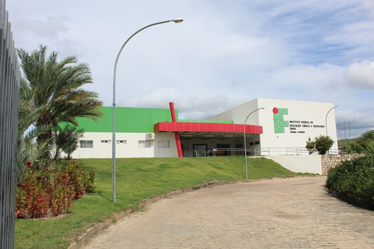
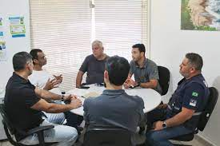
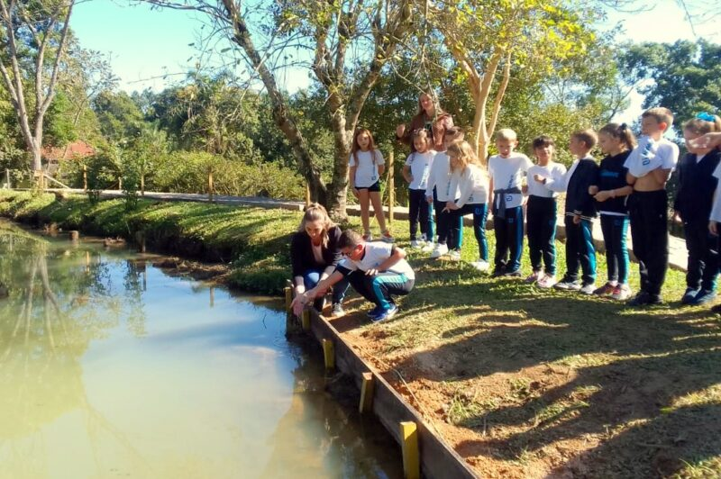
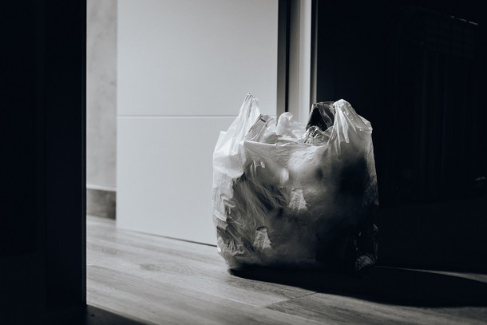

Seminário de Meio Ambiente do Campus Jacobina discute preservação ambiental no Piemonte da Chapada Diamantina

Prefeitura de São Sebastião discute parceria com operadoras portuárias para preservação ambiental

Dia Internacional dos Museus é marcado com ações educativas voltadas à preservação do meio ambiente

Programa de Coleta Seletiva e Cata Treco promove preservação ambiental